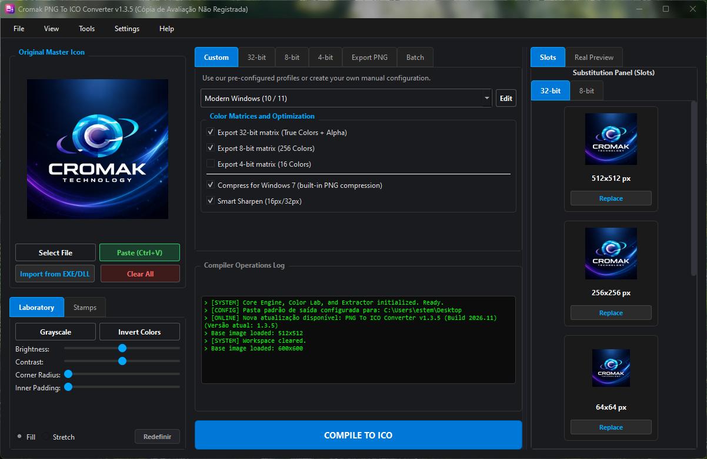

Arquitetura Nativa Windows • 100% Offline
Forjando Ferramentas de Alta Performance
A soberania digital que você perdeu, devolvida. Softwares de arquitetura sólida criados para quem exige segurança absoluta e velocidade inegociável, pensados para quem valoriza performance e praticidade.


